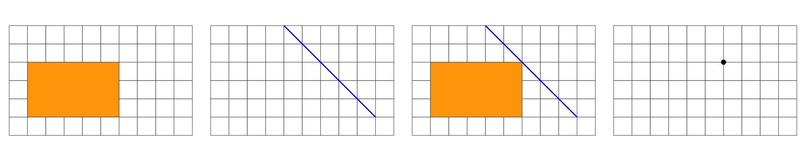
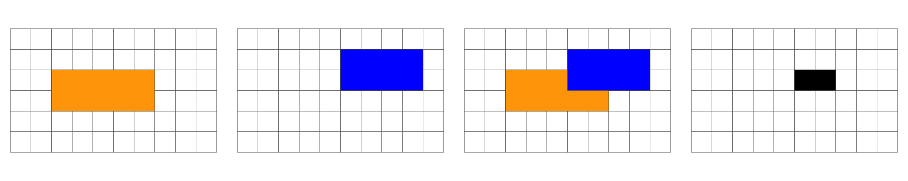
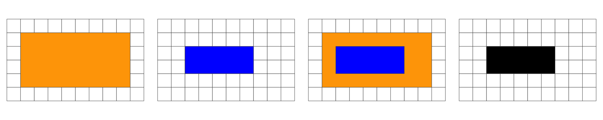
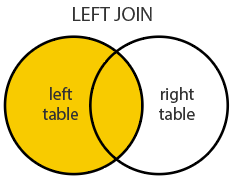

Lecture 25
Predicates and the DE-9IM
Interior, Boundary and Exterior: LINESTRING

Summary

Overlap is a POINT: 0D



Overlap is a POLYGON: 2D



A simpler (binary) version of this matrix can be created by mapping all non-empty intersections {0,1,2} to TRUE.

Where II would state: “Does the Interior of”a” overlaps with the Interior of “b” in a way that produces a point (0), line (1), or polygon (2)”
Where IB would state: “Does the Interior of”a” overlap with the Boundary of “b” in a way that produces a point (0), line (1), or polygon (2)”
Both matrix forms: - dimensional {0,1,2,F} - Boolean {T,F}
Can be serialize as a “DE-9IM string code” representing the matrix in a single string element (standardized format for data interchange)
The OGC has standardized the typical spatial predicates (Contains, Crosses, Intersects, Touches, etc.) as Boolean functions, and the DE-9IM model as a function that returns the DE-9IM code, with domain of {0,1,2,F}
Illustration

Reading from left-to-right and top-to-bottom, the DE-9IM(a,b) string code is ‘212101212’
Example
- Geometry X is a 3 feature polygon colored in red
- Geometry Y is a 4 feature polygon colored in blue

Result

Spatial Joining
- Joining two non-spatial datasets relies on a shared key that uniquely identifies each record in a table

Spatially joining data relies on shared geographic relations rather then a shared key
Like filter, these relations can be defined by a predicate
As with tabular data, mutating joins add data to the target object (x) from a source object (y).
st_join
In
sfst_joinprovides this joining capacityBy default,
st_joinperforms a left join (Returns all records from x, and the matched records from y)

- It can also do inner joins by setting
left = FALSE.

The default predicate for
st_join(andst_filter) isst_intersectsThis can be changed with the join argument (see
?st_joinfor details).
Clipping
Clipping is a form of subsetting that involves changing the geometry of at least some features.
Clipping can only apply to features more complex than points: (lines, polygons and their ‘multi’ equivalents).